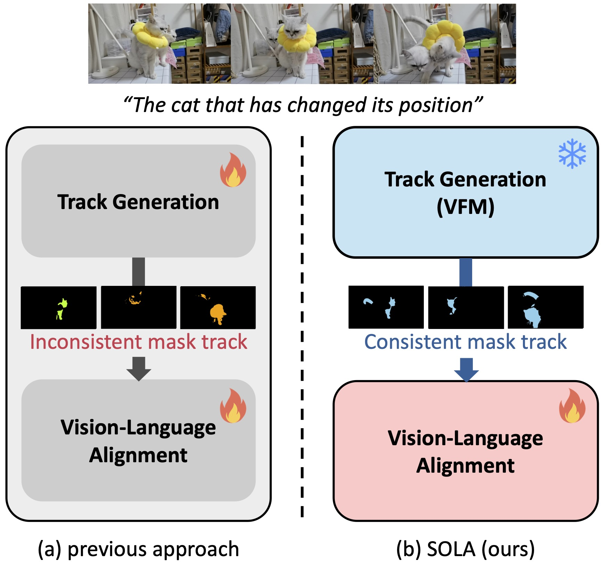
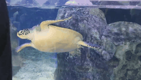
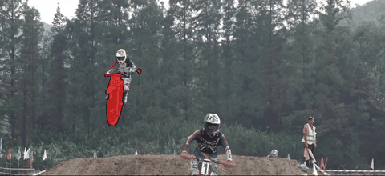
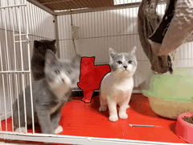
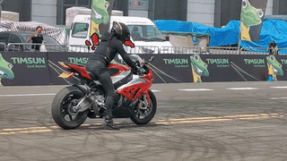

{kind=link}
{kind=link}
{kind=link}
{kind=link}
{kind=link}
{kind=link}
{kind=link}
{kind=link}
Motivation


SOLA demonstrates exceptional temporal consistency and precise vision-language alignment,
even when the expression describes complex motions.
| DsHmp | ||||
|---|---|---|---|---|
| Ours |
 moving from right to left
|
 It enthusiastically chases and pounces on the wand
|
 The two vehicles parked on the side of the road
|
 baby tiger without moving position
|
Referring Video Object Segmentation (RVOS) seeks to segment objects throughout a video based on natural language expressions. While existing methods have made strides in vision-language alignment, they often overlook the importance of robust video tracking, which is crucial for accurate video segmentation. Such inconsistent tracking can disrupt vision-language alignment, leading to suboptimal performance. In this work, we present Selection by Object Language Alignment (\ours), a novel framework that reformulates RVOS into two sub-problems, track generation and track selection. In track generation, we leverage a vision foundation model, Segment Anything Model 2 (SAM2), which generates consistent mask tracks across frames, producing reliable candidates for both foreground and background objects. For track selection, we propose a light yet effective selection module that aligns visual and textual features while modeling object appearance and motion within video sequences. This design enables precise motion modeling and alignment of the vision language. Our approach achieves state-of-the-art performance on the challenging MeViS dataset and demonstrates superior results in zero-shot settings on the Ref-Youtube-VOS and Ref-DAVIS datasets. Furthermore, SOLA exhibits strong generalization and robustness in corrupted settings, such as those with added gaussian noise or motion blur.


 Qualitative results of Pascal-Context with 59 categories.
Qualitative results of Pascal-Context with 59 categories.


@misc{shin2024openvocabularysemanticsegmentationsemantic,
title={Referring Video Object Segmentation via Language Aligned Track Selection},
author={Heeseong Shin and Chaehyun Kim and Sunghwan Hong and Seokju Cho and Anurag Arnab and Paul Hongsuck Seo and Seungryong Kim},
year={2024},
eprint={2409.19846},
archivePrefix={arXiv},
primaryClass={cs.CV},
url={https://arxiv.org/abs/2409.19846},
}